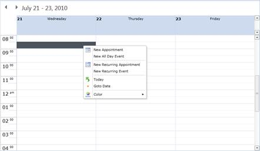
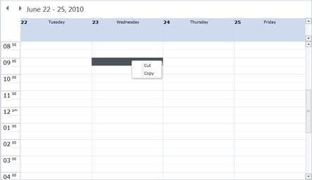
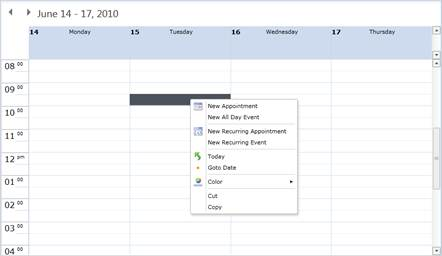

Context Menu Type is set by the property ContextMenuType, which is used for the types of menu items displayed in the Context Menu. There are three types available namely:
· Default : Shows Only the Default Context Menu Items
· Custom : Shows Only the Custom Context Menu Items
· CustomWithDefault : Shows both Default and Custom Menu Items
Note: Default is the default Context Menu Type
Default
The default ContextMenuType is Default. So the default Context Menu is loaded with basic menu items.
|
[XAML] <schedule:Schedule x:Name="schedule" ContextMenuType="Default"/> |

Figure 55: Default Context Menu
Custom
For Custom context menu, set the ContextMenuType as Custom. Automatically, when the default items are removed, only the custom menu items are shown. If you don’t add any custom menu items, it does not show anything.
|
[XAML] <schedule:Schedule x:Name="schedule" ContextMenuType="Custom"/> |

Figure 56: Custom Context Menu
CustomWithDefault
For customizing the default context menu, set the ContextMenuType as CustomWithDefault. Automatically, the custom menu items are added along with the default menu items.
|
[XAML] <schedule:Schedule x:Name="schedule" ContextMenuType="CustomWithDefault"/> |

Figure 57: Custom with Default Context Menu